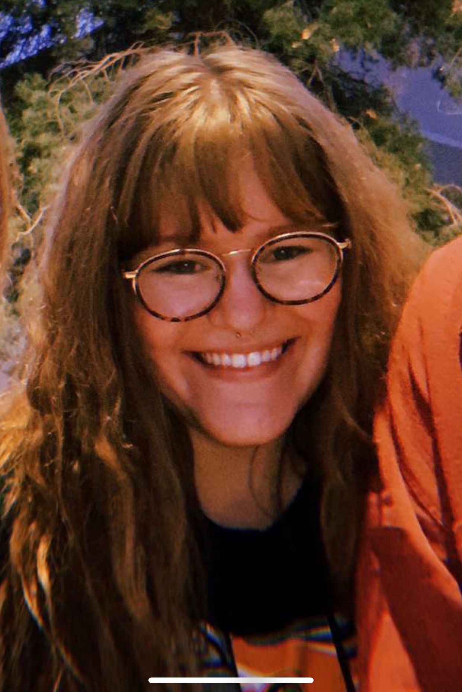

About Me

Hello! My name is Emily Freeman, and I am a second-year Journalism and Mass Communications student at the University of New Mexico. With a concentration in strategic communication, I hope to garner more of an understanding in public relations and marketing so I can open up my own business one day. I would love to own a coffee shop that caters to University students similar to me, potentially providing not only a place to do homework, but also a place to relax, meet friends, and escape their busy lives on campus. I was born and raised in New Mexico, and love it here. So, one day I may actually open a cafe for UNM students.
This last semester, I have learned so many new skills about web design and branding, which I am trying to culminate within this one website. Although the site may be a little rough compared to those that are done by a professional, I am extremely proud to even be able to create an entire site on my own, as well as create graphics that I feel portray my own personal brand.
Outside of school, I enjoy baking, painting, watching movies, and spending time with friends and family. Overall, I am willing to try anything that is creative, and am really excited to pick up some more hobbies, as well as renew my interest in some of them that I have been neglecting over winter break.
Thank you for your interest!